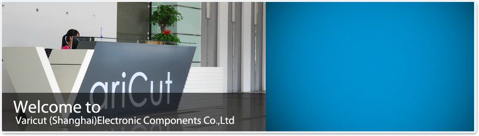
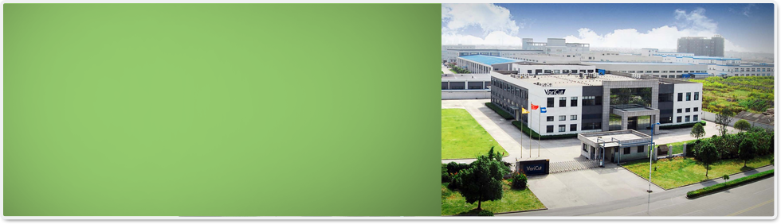

公司介绍
威侃集团最早创始于1999年，集团总部及主体公司上海威侃电子材料有限公司坐落于上海嘉定。
经过十多年的发展和整合历程，现已发展成为以印刷为核心的相关多元化民营科技集团公司。其业务已涵盖数码印刷及打印设备，包装印刷及包装材料，标识及精密电子材料等相关业务。公司产品广泛应用于能源，电子制造，医疗，电信等领域，并为众多世界500强企业提供配套供应。

公司理念
威侃公司一贯秉承“以人为本，与时俱进，不断创新”的企业文化和经营理念，坚持把“生产有自己特色的产品”为奋斗目标，在掌握现有技术的基础上积极创新，以出众的品质、信赖的可靠性、不断发掘客户新的需求，不断开发新的产品和运用新的工艺，成为我们所专注行业的领先企业。公司积极履行企业社会责任，关注和参与慈善公益与环保事业。凭借先进的管理理念、强大的研发团队和产品技术，以其创新的技术、卓越的解决方案，坚持不懈地与客户及合作伙伴建立长久、互利的合作关系，不断优化流程、提升效率，为实现绿色、生态、环保的可持续发展贡献自己的力量。
设备
各类印刷机,轮转机,冲切机,模切机,
裱纸机,装订机

品牌
VariCut”品牌诞生于2003年，是威侃发展事业的一个重要里程碑。VariCut中Vari由英文Various，即中文各种各样的，款式齐全的涵义延伸而来；Cut，即中文切割的涵义。两者组合组成VariCut，寓意为客户提供标识、模切、包材、透气膜等全方位的解决方案。